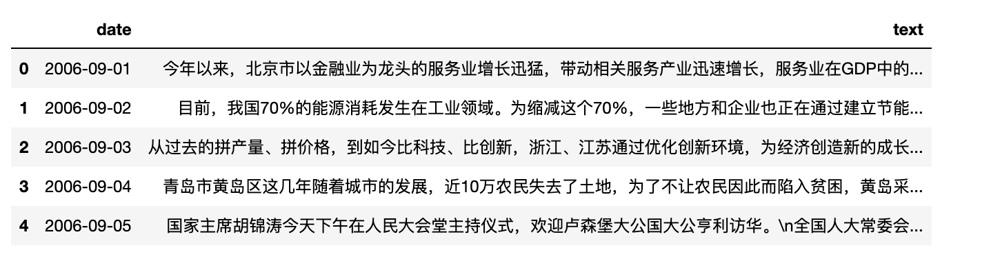
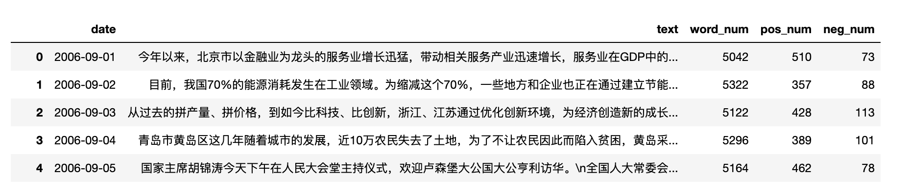
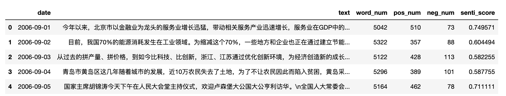
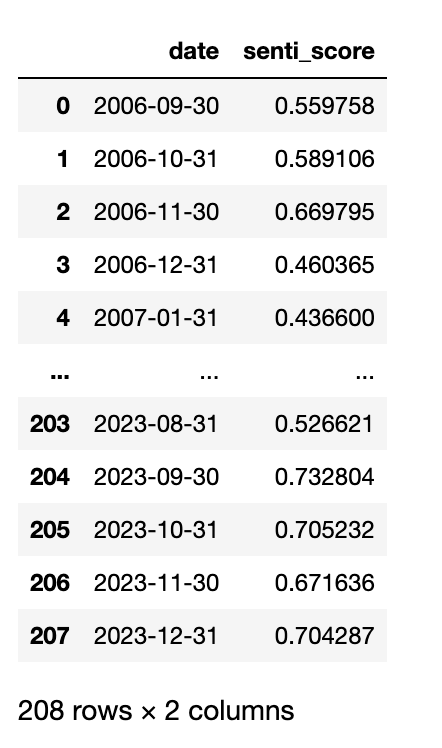
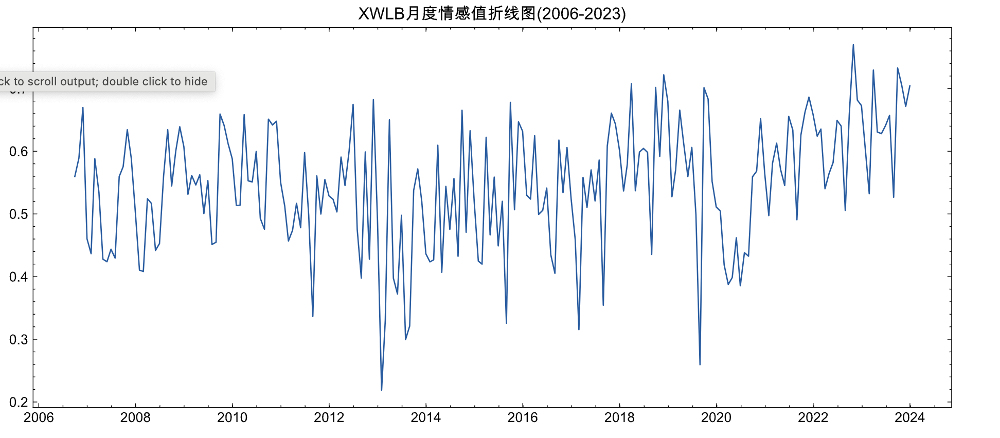

一、新闻联播
1.1 数据集概况
全网最全的数据集， 记录缺失率最低的xwlb数据集， 新(fan)闻(rong)联(chang)播(sheng) 。
数据来源: 央视网https://tv.cctv.com/lm/xwlb/
覆盖日期: 2006-09-01 ~ 2023-12-15
日记录数: 6315天
字段: date、 text
1.2 研究用途
可从中提取丰富的指标，包括但不限于经济政策不确定性指数EPU 、 媒体关注度、媒体情绪、文本相似度。此外， 可训练词向量，开发新的概念词典，构建新的指标指数。数据带时间， 参照前面指标， 依主体、日期、指标进行计算， 可构造面板数据，因此在经济学、管理学、新闻传播学、公共管理等领域均有较高的研究价值。
相关参考文献
[1]洪永淼,刘俸奇,薛涧坡.政府与市场心理因素的经济影响及其测度[J].管理世界,2023,39(03):30-51.
[2]刘景江,郑畅然,洪永淼.机器学习如何赋能管理学研究？——国内外前沿综述和未来展望[J].管理世界,2023,39(09):191-216.
[3]张一帆,林建浩,樊嘉诚.新闻文本大数据与消费增速实时预测——基于叙事经济学的视角[J].金融研究,2023,(05):152-169.
[4]Huang, Yun, and Paul Luk. "Measuring economic policy uncertainty in China." China Economic Review 59 (2020): 101367
[5]欧阳资生,陈世丽,杨希特,刘凤根,周学伟.经济政策不确定性、网络舆情与金融机构系统性风险[J].管理科学学报,2023,26(04):62-86.
[6]逯东,宋昕倍.媒体报道、上市公司年报可读性与融资约束[J].管理科学学报,2021,24(12):45-61.
[7]彭涛,黄福广,孙凌霞.经济政策不确定性与风险承担:基于风险投资的证据[J].管理科学学报,2021,24(03):98-114.
[8]庞锐.采纳与内化：多重制度压力如何影响河长制创新扩散——基于省级政府的定向配对事件史分析[J].公共管理学报,2023,20(02):25-37+165-166.
1.3 获取数据
【新闻联播xwlb】按年度，每年50元。 全量购买200元。
加微信 372335839， 备注「姓名-学校-专业」。
更多新闻类数据 数据集 | 人民日报/经济日报/光明日报 等 7 家新闻类文本数据集
二、数据检查
2.1 读取数据
import pandas as pd
#6315天
df = pd.read_csv('cctv_xwlb.csv')
#变更日期格式，可进行日期计算
df['date'] = pd.to_datetime(df['date'])
print(len(df))
df.head()
Run
6315

2.2 日期涵盖
#执行过 df['date'] = pd.to_datetime(df['date'])
#才能进行日期计算
print(df['date'].min().date())
print(df['date'].max().date())
Run
2006-09-01
2023-12-15
3.3 缺失率
查看是否存在某些日期对应的文本是空
df['text'].isna().sum()/len(df)
Run
0
生成2006-09-01-2023-12-15之间所有的日期datelist， 查看datelist哪些日期不在数据集中，以判断是否遗漏某些日期。
import datetime as dt #import datetime, timedelta
start_date = dt.datetime(2006, 9, 1)
end_date = dt.datetime(2023, 12, 15)
delta = dt.timedelta(days=1)
date_list = []
current_date = start_date
while current_date <= end_date:
date_list.append(current_date)
current_date += delta
pd.Series(date_list).isin(df['date']).sum()/len(date_list)
Run
1.0
2006-09-01~2023-12-15之间所有的日期， 均存在于新闻数据集中，也就是说数据集没有遗漏这期间任何一天的新闻。
三、实验
按月份(也可调整为周、年)计算一下正负面情绪词在新闻中出现次数， 然后转化为情感分值， 绘制成折线图。
- 导入词典
- 设计算法, 如统计新闻总词数、正面词数、负面词数。
- 转化为情感分值
- 按月份汇总
- 绘制折线图
3.1 导入词典
使用cntext2.0.0内置的中文经济金融场景的情感词典，该词典比较适合xwlb这种题材，我们查看一下
import cntext as ct
#未开源cntext2.0.0
diction = ct.read_yaml_dict('zh_common_FinanceSenti.yaml')['Dictionary']
print('pos词数', len(diction['pos']))
print('neg词数', len(diction['neg']))
#词典整理自论文， 大家也可自行整理
print(ct.read_yaml_dict('zh_common_FinanceSenti.yaml'))
Run
pos词数 3338
neg词数 5890
{'Refer': 'Fuwei Jiang, Joshua Lee, Xiumin Martin, and Guofu Zhou.“Manager Sentiment and Stock Returns” Journal of Financial Economics 132(1), 2019,126-149',
'Desc': 'Chinese Financial Sentiment Dictionary',
'Category': ['pos', 'neg'],
'Name': 'Chinese Financial Sentiment Dictionary',
'Dictionary': {'pos': ['安定', '安康', '帮助', '榜样', '饱满', ... '最合适', '最小', '最新进展', '最早', '遵法'],
'neg': ['败坏名声', '被没收的', '变节', '不便', '不适当', '妨碍', '腐败',...'唉声叹气', '哀怨', '哀叹', '哀伤', '哀悼']
}
配置cntext-2.0.0-py3-none-any.whl的方法
-
将whl文件放置于电脑桌面。
-
打开cmd(mac打开terminal)， 输入
cd desktop, 按Enter回车键 -
继续在cmd(mac打开terminal)中，输入
pip3 install cntext-2.0.0-py3-none-any.whl, 按Enter回车键
3.2 统计词频
这里
%%time
import jieba
import cntext as ct
diction = ct.read_yaml_dict('zh_common_FinanceSenti.yaml')['Dictionary']
pos_patern = '|'.join(diction['pos'])
neg_patern = '|'.join(diction['neg'])
df['word_num'] = df['text'].fillna('').apply(lambda text: len(jieba.lcut(text)))
#正面词数
df['pos_num'] = df['text'].fillna('').str.count(pos_patern)
#负面词数
df['neg_num'] = df['text'].fillna('').str.count(neg_patern)
df.head()

3.3 计算情感值
使用 score = pos-neg/(pos+neg)， 可以将数值范围调整到 -1 ~ 1之间。
df['senti_score'] = (df['pos_num'] - df['neg_num'])/(df['pos_num'] + df['neg_num'])
df.head()

print('最小值', df['senti_score'].min())
print('均值', df['senti_score'].mean())
print('中位数', df['senti_score'].median())
print('最大', df['senti_score'].max())
Run
最小值 -0.36633663366336633
均值 0.5448464974146746
中位数 0.5657256687535572
最大 1.0
3.4 按月份
这里用到df.groupby方法， 可以按某种分组方法，得到不同组的dataframe集合。
dataframe集合可以通过for循环逐个迭代，分别计算对应年度的信息。
month_datas = []
for date, year_df in df.groupby(pd.Grouper(key='date', freq='M')):
data = dict()
data['date'] = date
data['senti_score'] = year_df['senti_score'].mean()
month_datas.append(data)
month_info_df = pd.DataFrame(month_datas)
month_info_df

3.5 绘制月情感折线图
import matplotlib.pyplot as plt
import matplotlib
import matplotlib_inline
matplotlib_inline.backend_inline.set_matplotlib_formats('png', 'svg')
import scienceplots
import platform
import pandas as pd
import numpy as np
plt.style.use(['science', 'no-latex', 'cjk-sc-font'])
system = platform.system() # 获取操作系统类型
if system == 'Windows':
font = {'family': 'SimHei'}
elif system == 'Darwin':
font = {'family': 'Arial Unicode MS'}
else:
font = {'family': 'sans-serif'}
matplotlib.rc('font', **font) # 设置全局字体
plt.figure(figsize=(12, 5))
plt.plot(month_info_df['date'], month_info_df['senti_score'])
plt.title('XWLB月度情感值折线图(2006-2023)')
plt.show()

四、相关内容
五、获取数据
【新闻联播xwlb】按年度，每年50元。 全量购买100元。
加微信 372335839， 备注「姓名-学校-专业」。
更多新闻类数据 数据集 | 人民日报/经济日报/光明日报 等 7 家新闻类文本数据集